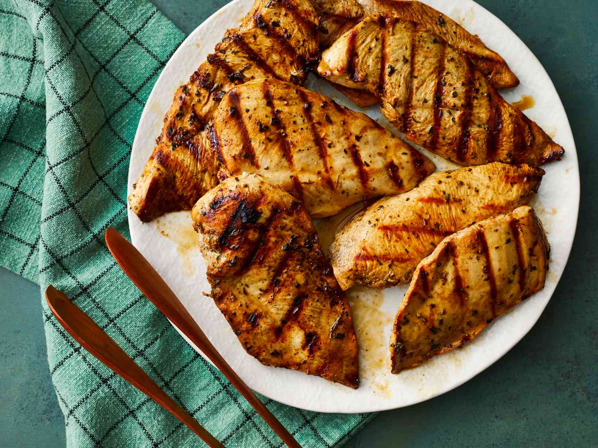

Grilled Chicken Marinade

Description
This top-rated grilled chicken marinade recipe ensures perfectly tender, juicy, and flavorful chicken every time.
Ingredients
- ¼ cup red wine vinegar
- ¼ cup reduced-sodium soy sauce
- ¼ cup olive oil
- 1 ½ teaspoons dried parsley flakes
- ½ teaspoon dried basil
- ½ teaspoon dried oregano
- ¼ teaspoon garlic powder
- ¼ teaspoon ground black pepper
- 5 skinless, boneless chicken breasts, thinly sliced
Steps
- Gather all ingredients.
- Whisk vinegar, soy sauce, olive oil, parsley, basil, oregano, garlic powder, and black pepper together in a bowl.
- Pour into a resealable plastic bag. Add chicken, coat with the marinade, squeeze out excess air, and seal the bag. Marinate in the refrigerator, at least 4 hours.
- Preheat grill for medium-low heat and lightly oil the grate. Drain and discard marinade.
- Grill chicken on the preheated grill until no longer pink in the center, 4 to 5 minutes per side. An instant-read thermometer inserted into the center should read at least 165 degrees F (74 degrees C).